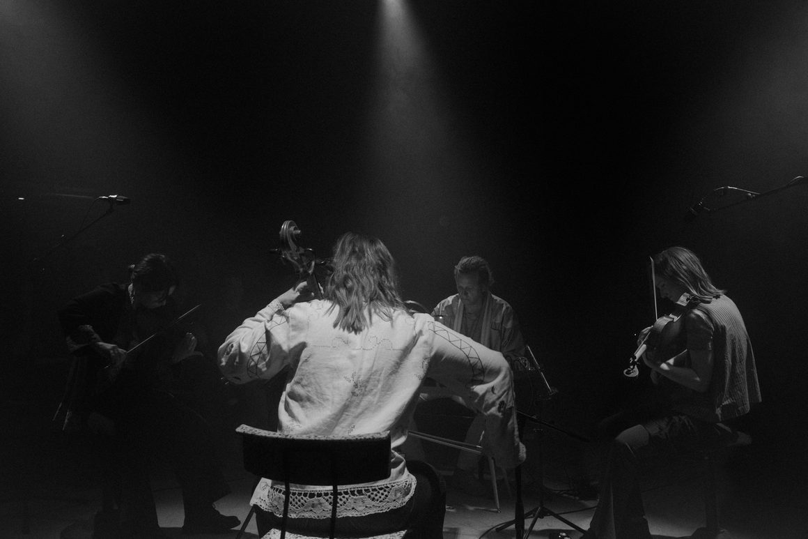

SPIRIT · 2025
Danish string trio Halvcirkel and composer Anders Lauge Meldgaard release collaborative album SPIRIT on vinyl and digital.
Copenhagen, Denmark — Acclaimed Danish composer Anders Lauge Meldgaard and the innovative string trio Halvcirkel are thrilled to announce the release of their collaborative album, Spirit. This extraordinary fusion of acoustic and electronic sounds will be available on March 20th, 2025, on vinyl and digital platforms through the Copenhagen-based experimental label År & Dag.
Spirit invites the listener to experience an intricate interplay, where melodic lines and creative textures from the string players merge seamlessly with electronic sounds and samples from Meldgaard’s Ondomo and eurorack modular setup. The result is a dynamic and deeply immersive sound, defying traditional genre boundaries.
The album represents the pinnacle of a creative partnership that began in 2016 during some enchanting concerts with the cherished project Frisk Frugt, where Halvcirkel and Meldgaard shared the stage for the first time. Over the years, their collaboration and friendship have flourished, evolving through numerous projects and performances.
The collaboration took a unique turn when one of Halvcirkel’s violinists went on parental leave. At that time, the group was preparing to perform a string quartet composed by Meldgaard specifically for them. Viola player Mika Persdotter suggested inviting Meldgaard himself to step in, performing the violin part on the New Ondomo—a modern Japanese adaptation of the Ondes Martenot, an electronic instrument invented in France more than a century ago. Though the idea required careful consideration, Meldgaard enthusiastically embraced the opportunity, leading to an inspiring reimagining of their work.
Halvcirkel is a Danish string trio founded in Copenhagen in 2015, consisting of violist Mika Persdotter, violinist Bettina Marie Ezaki, and cellist Nicole Hogstrand. Their work reflects a contemporary take on classical music, balancing tradition with experimentation and inviting listeners into a world of rich textures and artistic exploration. Previous release of their first album of entirely original compositions, titled 'Vida’ was released on FatCat Records’ modern classical imprint 130701.
Anders Lauge Meldgaard is a composer and musician whose work spans an eclectic range of musical styles, including modern composition, improvisation, orchestral collages, electronic music and more. His projects often explore the tension between composition and improvisation, creating adventurous and genre-defying pieces.
Label Information
År & Dag is a Copenhagen-based label specializing in experimental music that challenges conventions and inspires curiosity.
Spirit will be available as a limited-edition vinyl and on all major digital platforms starting April 2, 2025. Catalog nr. AD16.
Bettina Ezaki - volin
Mika Persdotter - viola
Nicole Hogstrand - Cello
Anders Lauge Meldgaard - New Ondomo and electronics.
Recorded by Andreas Pallisgaard
Thanks to Kunstfonden, Koda Kultur og Dansk Komponistforening.
Listen on Bandcamp

